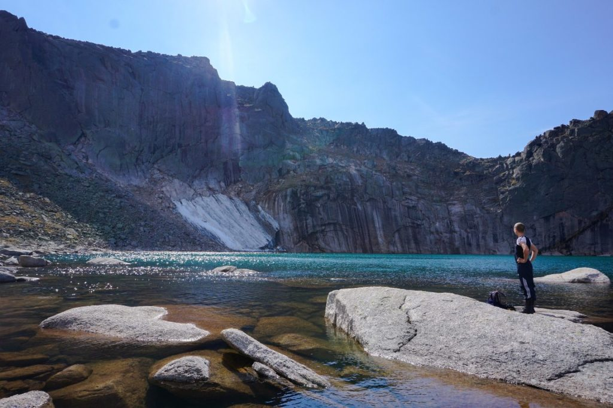
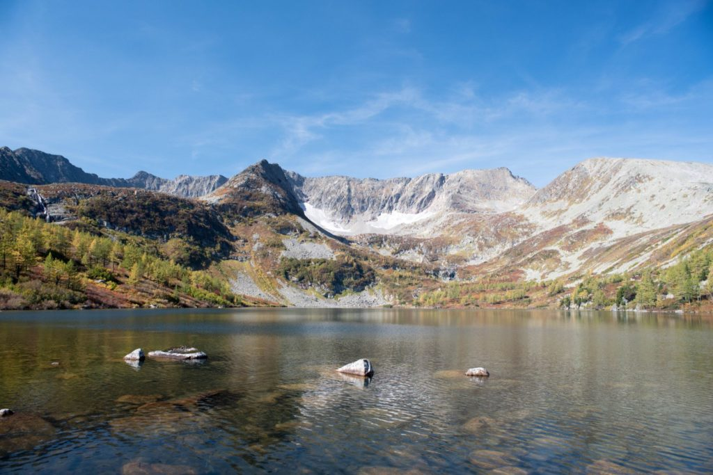
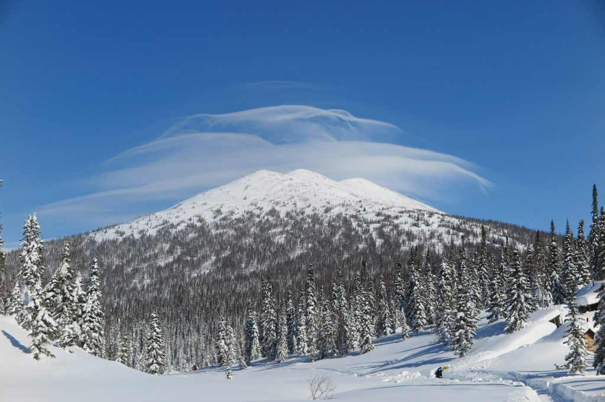
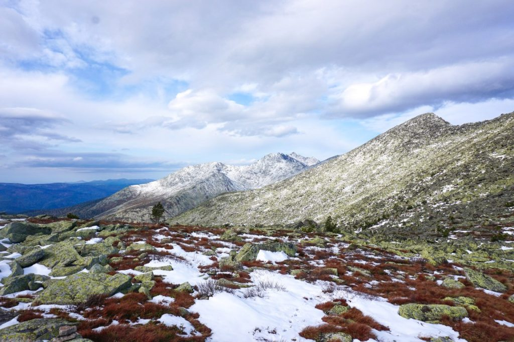
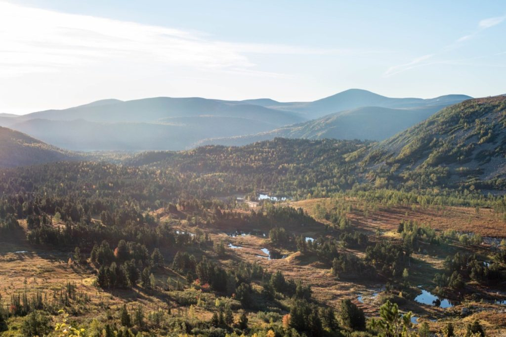

Вернуться на главную
Фотографии путешественников

Озеро Инь-Ян, Золотая долина, Поднебесные Зубья

Озеро круглое, Поднебесные Зубья

Пик Дураков (Поднебесный)

Хребет Тигер-Тыш в сентябре

Золотая долина